Monitoring
Monitor & Traces
The central operations console for the Integration Add-on. View every sent and received message, inspect full payload content, track delivery status, read error details and re-trigger failed messages – no ABAP debugging or SE16 required.
ASAPIO Monitor
The ASAPIO Monitor provides a central view of all outbound message processing activity.
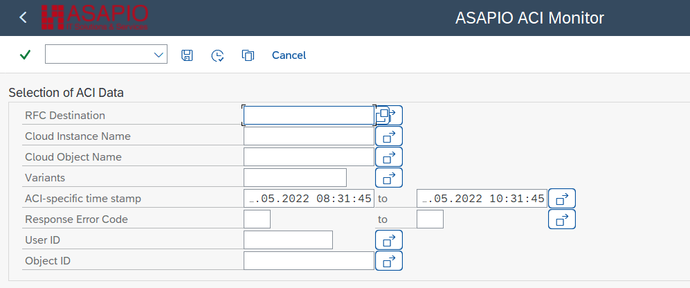
Transaction: /n/ASADEV/ACI_MONITOR
Required role: /ASADEV/ACI_ADMIN_ROLE
Selection Criteria
Filter the monitor view using:
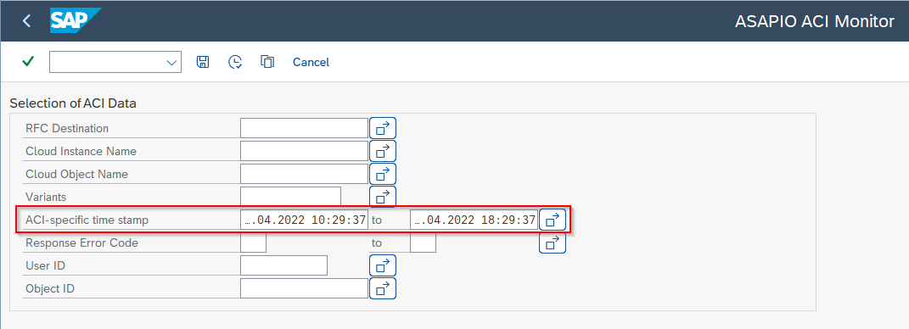
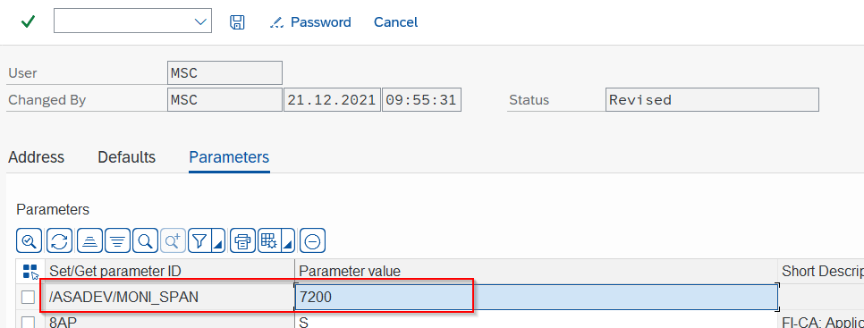
- RFC Destination
- Cloud Instance name
- Outbound Object name
- Saved Variants
- Timestamp range (from / to)
- HTTP Response Error Code
- User ID (who triggered the event)
- Object ID (e.g. a specific Sales Order number)
Log Entry Details
Each log entry shows message processing details. Tabstrip tabs provide:
- Traces – full message payload trace (only available when tracing is enabled)
- Application Log – SLG1 application log entries for this message
- Change Pointers – view and manage the underlying change pointer records
- All Unprocessed CPs – unprocessed change pointers for the same object
Layout Options
Switch the monitor layout between horizontal and vertical split using the button in the toolbar (available from release 9.32410). The default split can also be set via user parameter: /ASADEV/MONI_SPLIT=v (vertical) in transaction SU3.
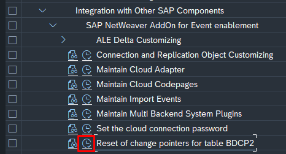
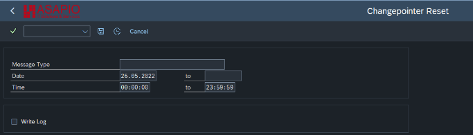
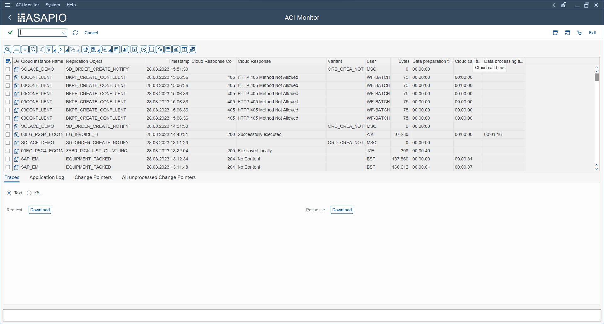
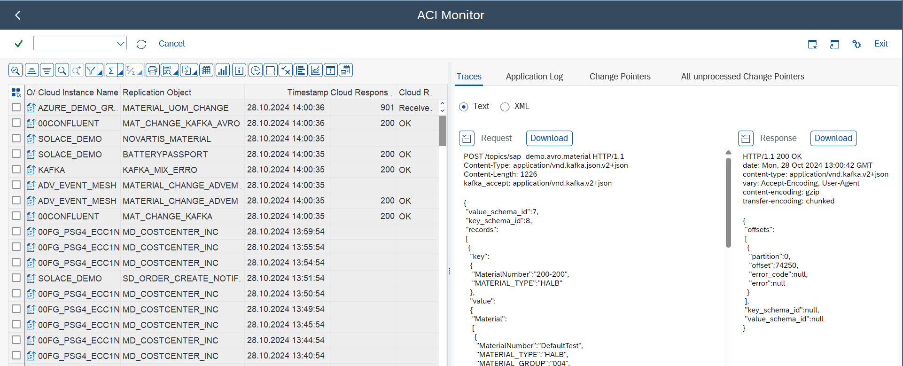
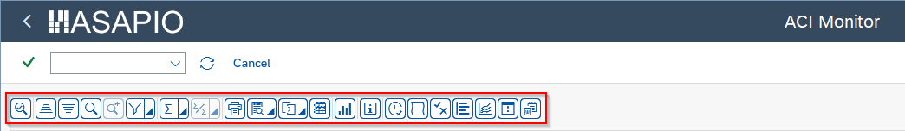
Monitor Actions
| Button | Description |
|---|---|
| Refresh | Reload the log list with current filter settings |
| Reprocess Selected Variant | Manually trigger reprocessing for selected error entries |
| Open Workflow Logs | Navigate to SAP Business Workplace for alerting workflow items |
| Display IDoc Statuses | Open IDoc status display for IDoc-based outbound messages |
Charts & Statistics
The monitor includes ALV diagram views showing processing statistics over time:
- Bytes: Message size trends per connection instance or object
- Times: Processing duration trends
- Errors: Error rate trends by instance or object
Change Pointer Operations
From the monitor, you can manage change pointer (CP) records:
- Reprocess immediately – trigger a new processing attempt for selected CPs
- Mark as unprocessed – reset a CP to unprocessed status for the next batch run
- Close / mark as processed – mark a CP as processed to prevent further retries
To reset an entire category of change pointers (e.g. after a mass test), use report /ASADEV/RESET_CAT_CP.
Pro-Active Alerting
ASAPIO supports threshold-based alerting that sends a workflow notification when the error rate for a connection instance or outbound object exceeds a configured threshold.
Alerting Setup
- In the connection instance or outbound object configuration, check the Threshold Alerting checkbox and enter the Agent ID (SAP User ID or Workflow role) to receive alerts.
- In SWE2 (Event Type Linkage), create an entry:
- Object Type:
/ASADEV/AA - Event:
ACTIVE_ALERT - Task:
TS00382117 - Function Module:
SWW_WI_CREATE_VIA_EVENT_IBF
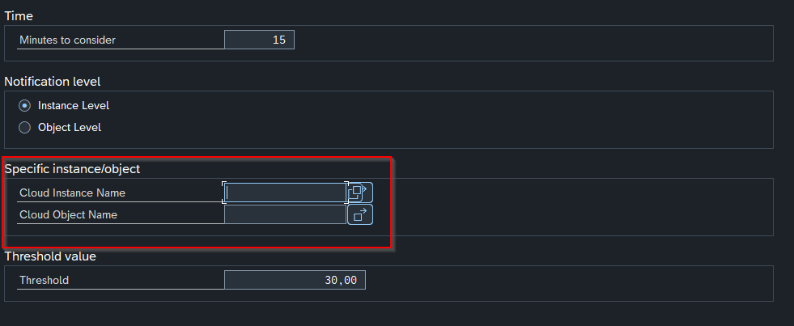
Alerting configuration – new threshold options (release 9.32304) - Object Type:
- Schedule report
/ASADEV/ACI_ACTIVE_ALERTING(SE38) as a background job to check error rates. Parameters:- Minutes threshold (how far back to check)
- Instance or object level
- Error threshold percentage
Alerts appear in the SAP Business Workplace → Inbox → Workflow → ACI active alerting.
Alerting BAdI
BAdI /ASADEV/ACTIVE_ALERTING provides extension methods:
send_all_to_external– route all alerts to an external system (e.g. email, Teams)send_filtered_to_external– route only specific alerts externallyskip_standard– suppress the standard SAP workflow notification
Message Tracing
Enable tracing for a connection instance to capture full message payloads in the monitor:
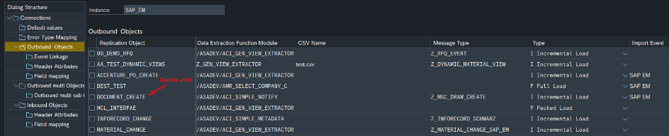
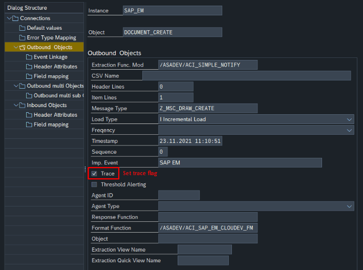
- In SPRO → Connection customizing, check the Trace checkbox for the instance
- Optionally set the maximum number of trace entries via parameter
MAXTRACE(recommended: 10000)
Note: Tracing stores actual payload data in STXH. Disable tracing after debugging to avoid unnecessary storage consumption. Be aware of GDPR implications – see GDPR Functions.
Archiving & Deletion
Use report /ASADEV/ACI_AMRLOG_DELETE to archive or delete old message log entries:
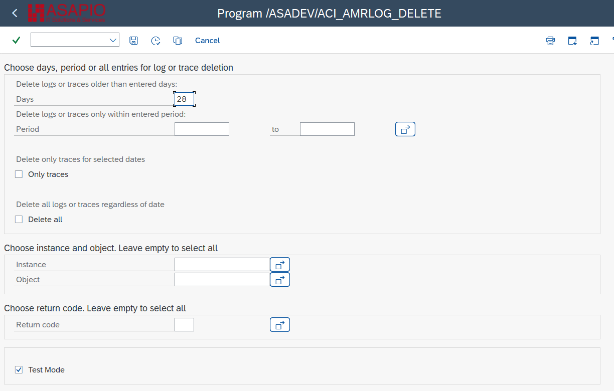
- Selection by: number of days, date range, cloud instance, outbound object
- Archive programs for SAP archiving objects:
/ASADEV/AMR_ARCHIVE_DELETE/ASADEV/AMR_ARCHIVE_READ/ASADEV/AMR_ARCHIVE_WRITE
Configure the log retention period via parameter SLG_DEL_PERIOD (default: 90 days). The timestamp display offset can be adjusted per user via SU3 parameter /ASADEV/MONI_SPAN (value in seconds).
Configuration Parameters
| Parameter | Description |
|---|---|
/ASADEV/ACI_PAR | Health monitoring parameters (various system settings) |
SLG_DEL_PERIOD | Log retention period in days (default 90) |
MAXTRACE | Maximum number of trace entries stored (default 10000) |
/ASADEV/MONI_SPAN | User-specific timestamp display offset in seconds (SU3) |
/ASADEV/MONI_SPLIT | Default monitor layout: v (vertical) or h (horizontal) |